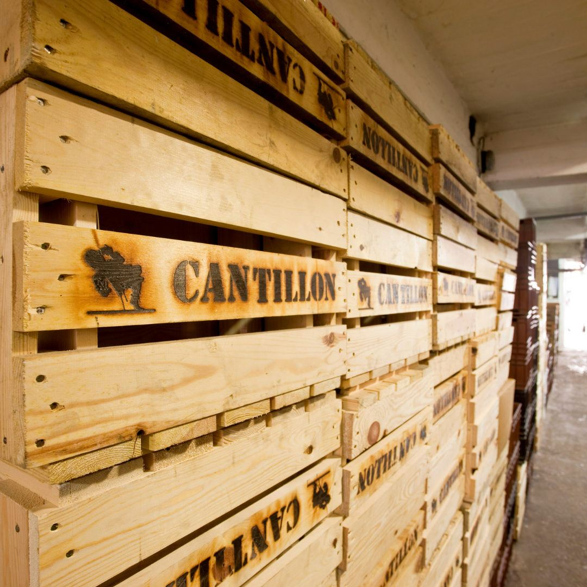

Entre amis, en famille ou en couple, vivez l’expérience Beer My Guest !
Jeux de piste, dégustations bière & chocolat, et découvertes uniques de Bruxelles !

Le jeu de piste bière
Une manière insolite, ludique, et gourmande de (re)découvrir la capitale belge, ses monuments incontournables, ses fresques urbaines, le tout au gré des bières.

La journée bière à Bruxelles
Offrez-vous une journée originale pour découvrir la capitale de Belgique ! En fin de matinée, vous commencez la journée par visiter une brasserie authentique et historique. Ensuite, vous profitez d’un bon lunch et l’après-midi, vous découvrez la ville avec notre jeu de piste avec dégustation à l’aveugle !